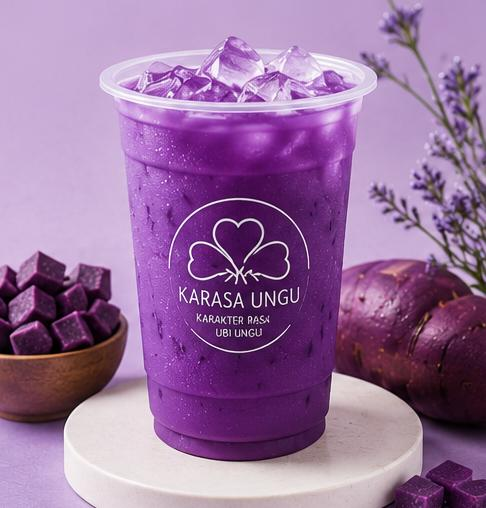

Karakter Rasa Ubi Ungu
Segarnya Ubi Ungu, Karakternya Selalu Baru.
Minuman berbahan dasar ubi ungu pilihan yang diolah menjadi minuman sehat, menyegarkan, dan bernilai tambah bagi komoditas pertanian lokal.
📞 089656387208
📍 Sayang, Jatinangor
📸 @berkarakterr.id

Perpaduan ubi ungu dan susu dengan rasa creamy.

Kombinasi ubi ungu dan topping keju.

Perpaduan ubi ungu dan cokelat premium.

Minuman ubi ungu yang ringan dan menyegarkan.
KARASA UNGU merupakan usaha minuman berbasis agribisnis yang mengolah ubi ungu menjadi produk minuman kekinian dengan cita rasa khas dan kandungan nutrisi yang baik bagi tubuh.
Nama "Karasa" berasal dari singkatan Karakter Rasa Ubi Ungu. Nilai "Karakter" diambil dari identitas Berkarakter.id yang menekankan keunikan, kualitas, dan ciri khas produk.
Menjadi usaha minuman berbasis agribisnis yang inovatif dengan mengangkat potensi ubi ungu lokal menjadi produk bernilai tambah dan berdaya saing.
1. Mengolah ubi ungu menjadi produk minuman berkualitas dan inovatif.
2. Memanfaatkan hasil pertanian lokal sebagai bahan baku utama.
3. Menyediakan minuman sehat untuk semua kalangan.
4. Mendukung UMKM berbasis agribisnis.
5. Meningkatkan nilai ekonomi ubi ungu.
🍠 Antioksidan (antosianin)
🍠 Kaya serat untuk pencernaan
🍠 Vitamin & mineral tinggi
🍠 Sumber energi alami
🍠 Meningkatkan nilai pertanian lokal
💜 Bahan ubi ungu pilihan
💜 Tanpa pewarna sintetis
💜 Rasa lembut dan creamy
💜 Cocok semua kalangan
💜 Mendukung petani lokal
WhatsApp: 089656387208
Instagram: @berkarakterr.id
Lokasi: Sayang, Jatinangor